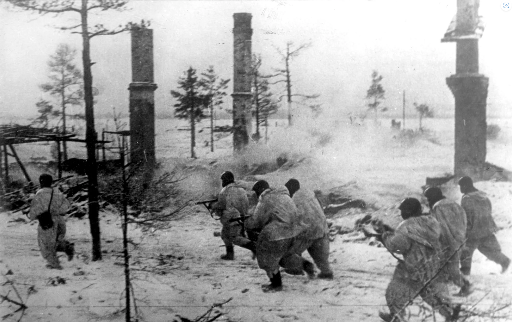

Операция «Искра» по прорыву блокады Ленинграда началась по приказу Ставки Верховного главнокомандующего 12 января 1943 г. Общий замысел операции сводился к тому, чтобы встречными ударами двух фронтов – Ленинградского с запада и Волховского с востока — разгромить группировку немецко-фашистских войск, удерживавшую Шлиссельбургско-Синявинский выступ. Командование фронтами было поручено генерал-лейтенанту Л. А. Говорову и генералу армии К. А. Мерецкову. Координировали взаимодействие представители Ставки – генерал армии Г. К. Жуков и маршал К. Е. Ворошилов. 18 января 1943 г. в 9.30 на восточной окраине Рабочего посёлка № 1 под Шлиссельбургом после решительной атаки части 123-й стрелковой бригады Ленинградского фронта соединились с частями 372-й дивизии Волховского фронта. Позже произошли встречи и других советских военных соединений. В тот же день был полностью освобождён Шлиссельбург и всё южное побережье Ладожского озера.
19 января 1943г.
